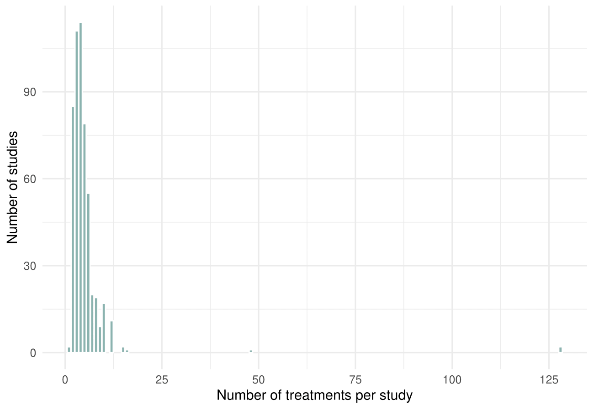
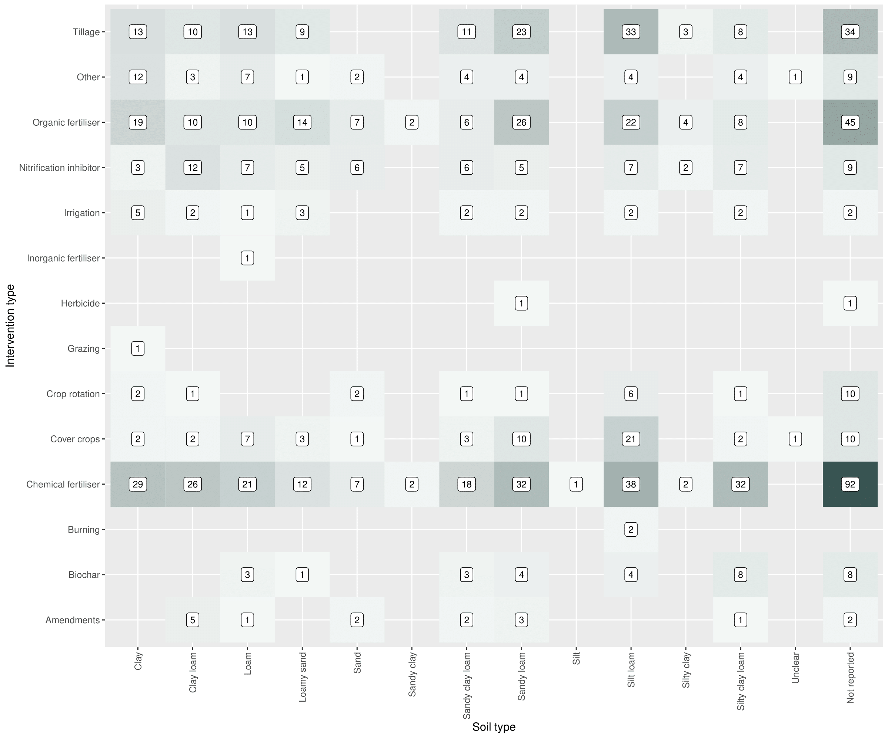

⌄ Number of studies by publication year ⌄
⌄ Number of studies by soil texture classification ⌄
⌄ Number of studies by study length (in years) ⌄
⌄ Number of studies by study length (where length less than 12 months) ⌄
⌄ Number of studies by experimental design ⌄
⌄ Number of studies using different levels of spatial replication ⌄
⌄ Number of studies across different study-level intervention types ⌄
⌄ Number of studies across different intervention-level intervention types ⌄
⌄ Number of treatments per study ⌄
⌄ Number of studies by outcome and final measurement year ⌄
⌄ Number of studies by outcome and intervention type ⌄
⌄ Number of studies by outcome and Köppen-Geiger climate zone ⌄
⌄ Number of studies by sampling equipment ⌄
⌄ Number of studies by soil type and internvention type ⌄
